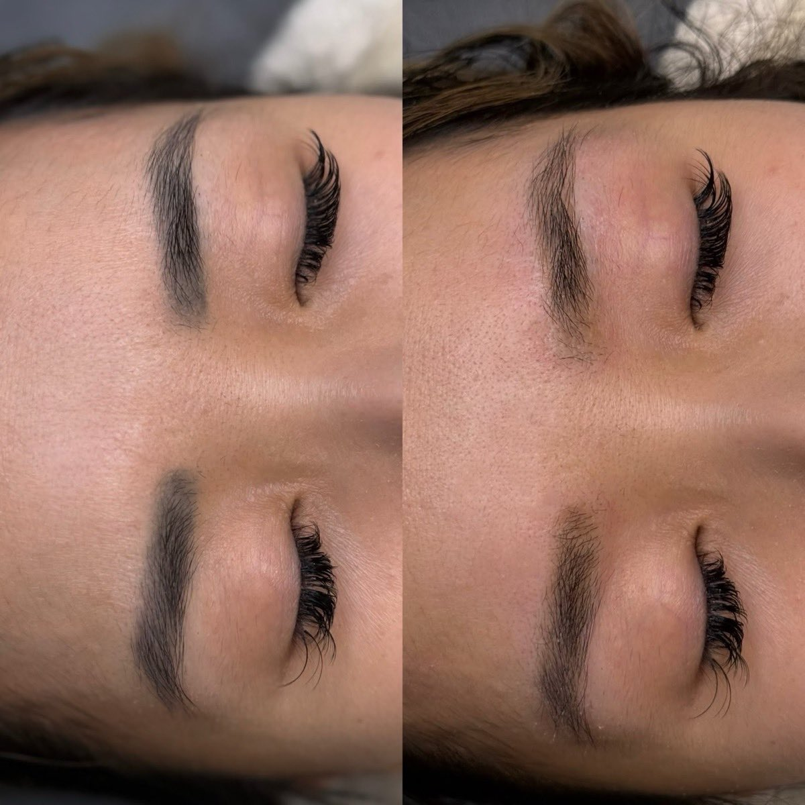
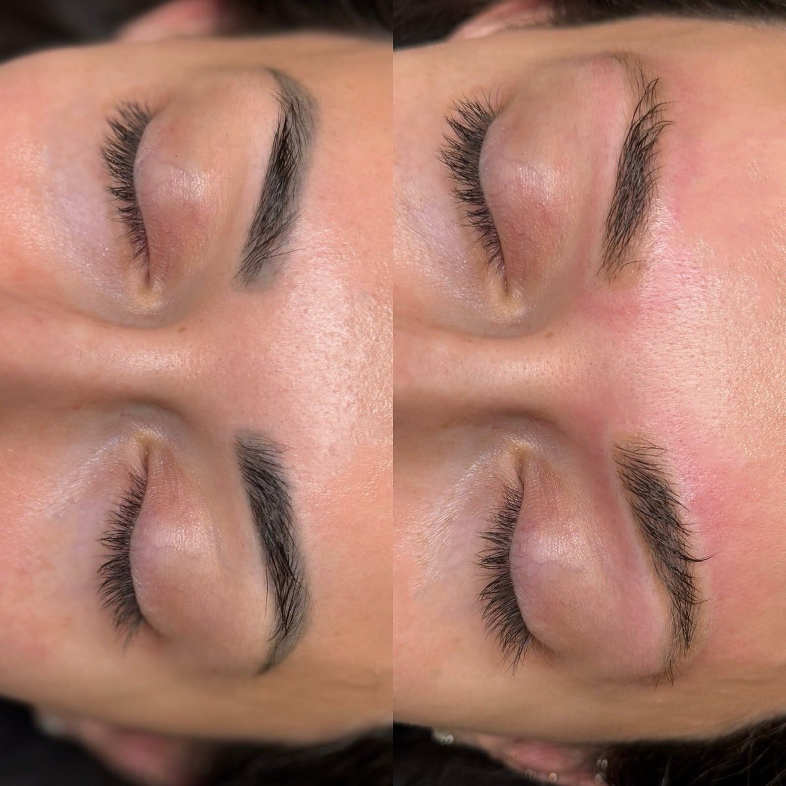
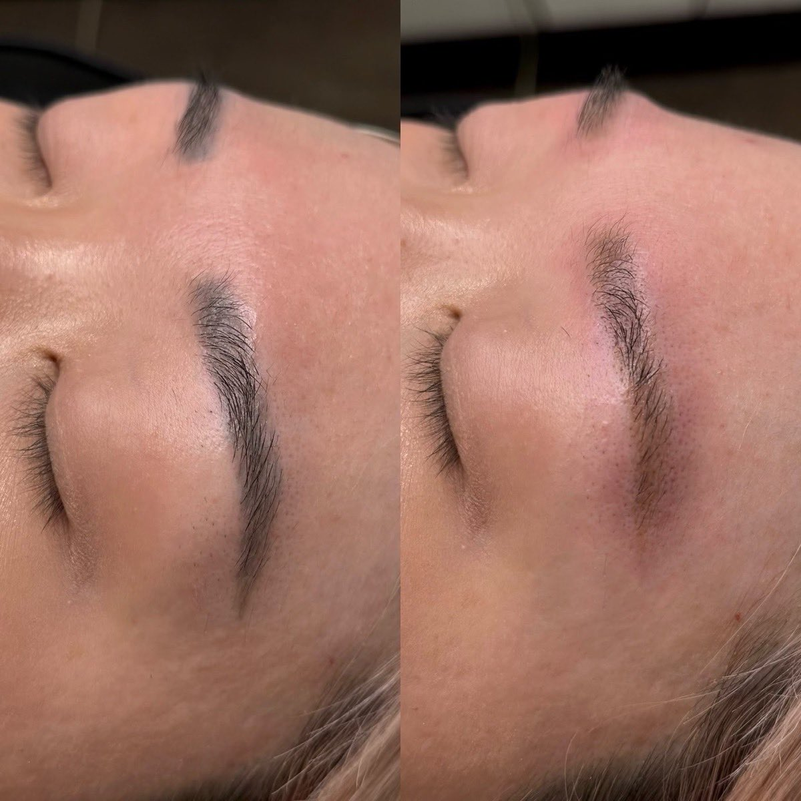
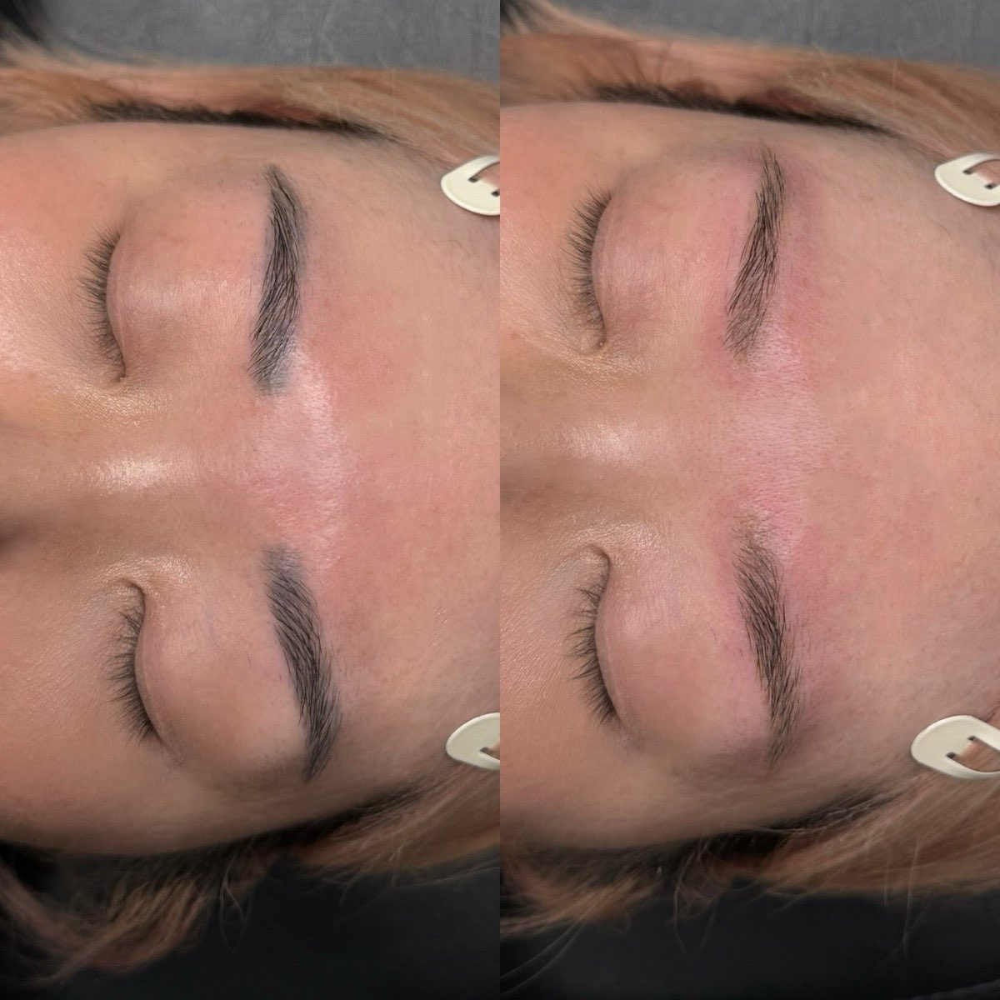
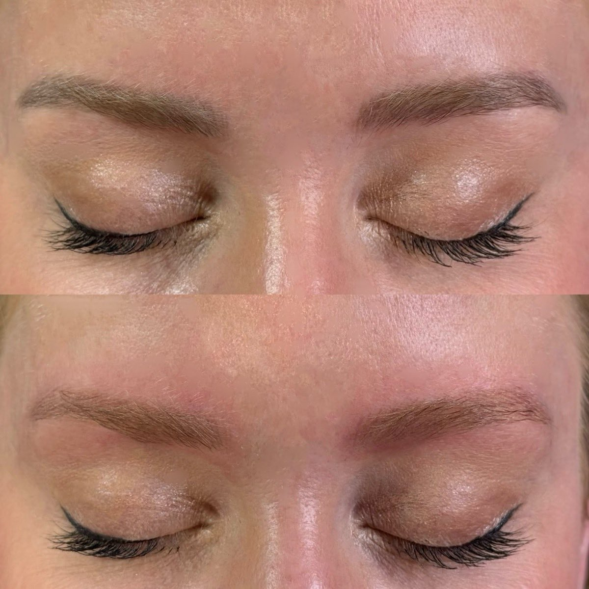
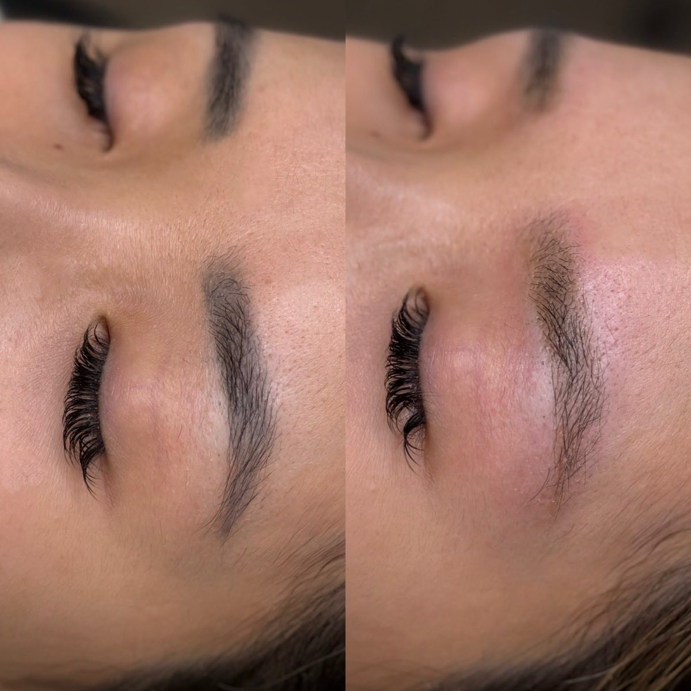
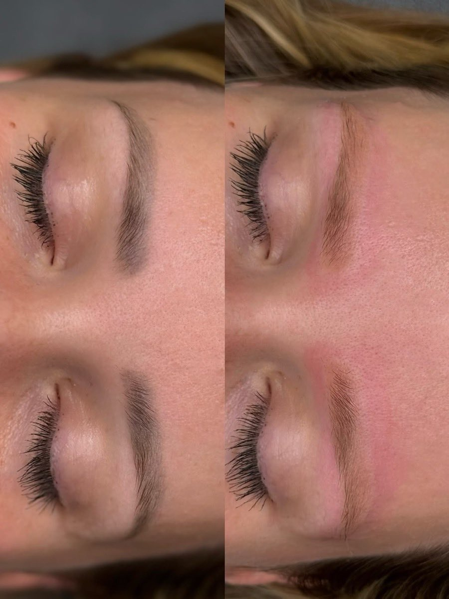
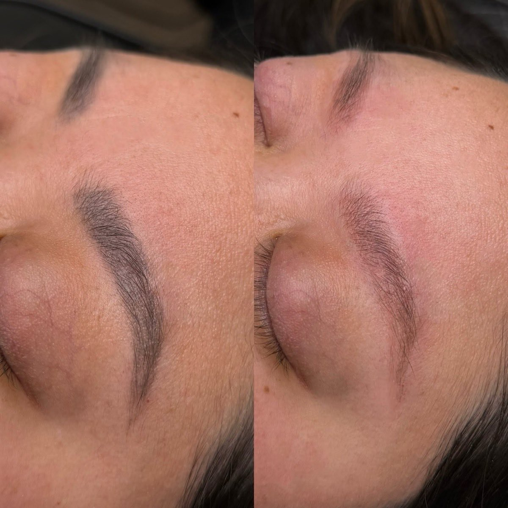
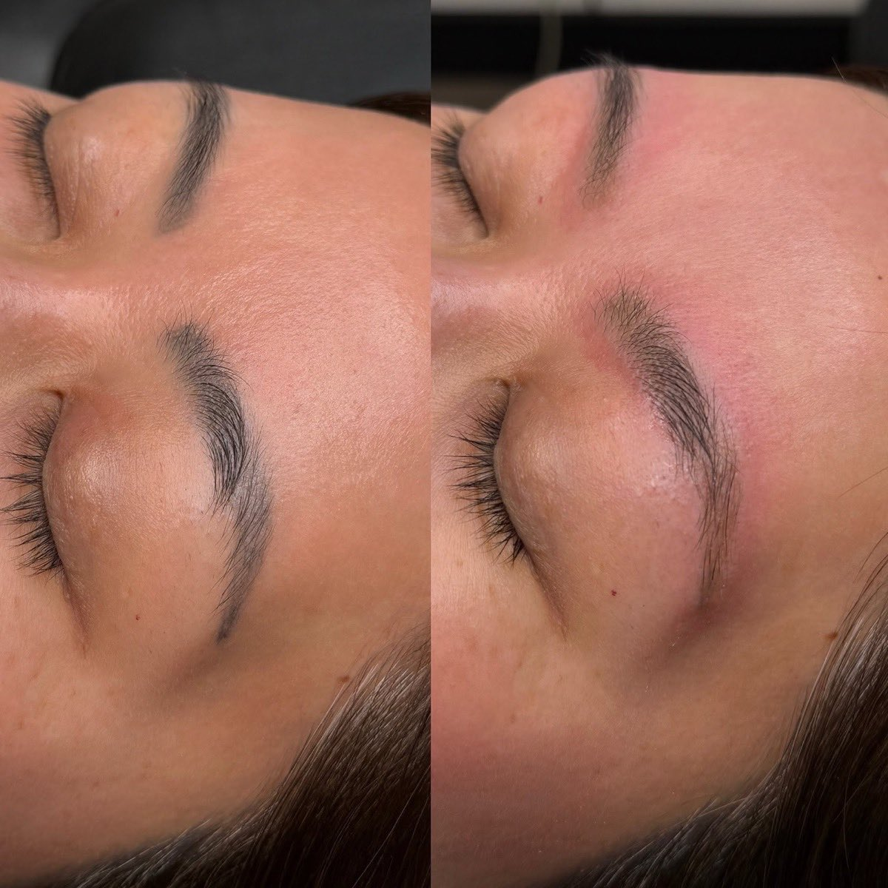
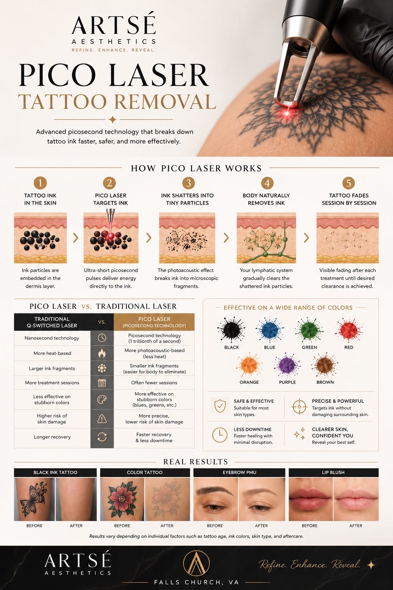

Remove unwanted tattoos, safely & effectively
At Artsé Aesthetics, we use advanced Pico Laser technology to help fade and remove unwanted tattoos with greater precision, comfort, and efficiency than many traditional tattoo removal methods.

Pico Laser · Tattoo RemovalPico laser tattoo removal uses ultra-short pulses of laser energy measured in picoseconds — one trillionth of a second. These rapid pulses create a powerful photoacoustic effect that shatters tattoo ink into tiny particles without relying primarily on heat.
Once the ink is broken down into microscopic fragments, your body's natural immune system gradually eliminates the particles over time, causing the tattoo to fade with each treatment session.
02How Pico Laser works
From embedded ink to a fading tattoo — the science in five steps.
Tattoo ink in the skin
Ink particles sit embedded in the dermis, the deeper layer of your skin.
Pico laser targets the ink
Ultra-short picosecond pulses deliver energy directly to the ink particles.
Ink shatters into particles
The photoacoustic effect breaks the ink into microscopic fragments.
The body removes the ink
Your immune system gradually clears the shattered ink particles away.
The tattoo fades
Visible fading builds after each session, until your desired clearance.
Why choose Pico over older removal lasers
Traditional Q-Switched lasers use nanosecond pulses and rely more heavily on heat to break down ink. Pico lasers deliver energy much faster, fragmenting ink more efficiently while minimizing damage to the surrounding tissue.
Faster, gentler, more precise removal
Faster ink breakdown
Picosecond pulses shatter pigment more efficiently than older lasers.
Fewer sessions
Many tattoos clear in fewer visits than with traditional removal.
Works on stubborn ink
Effective on previously treated and resistant tattoos.
Better on tough colors
Improved results on difficult shades, including blues and greens.
Reduced risk of scarring
Less reliance on heat means gentler treatment of the skin.
More comfortable
Less discomfort during treatment, with faster recovery and healing.
Among the most advanced removal treatments available
While no laser can guarantee complete removal of every tattoo, most clients experience significant fading and excellent clearance after a series of treatments. Results depend on several factors:
- Tattoo age
- Ink colors used
- Tattoo size and location
- Professional vs. amateur tattoo
- Ink depth and density
- Individual immune response
Most clients require multiple sessions spaced approximately 6–8 weeks apart, to allow the body time to clear the fragmented ink between visits.
Effective across a wide range of pigments
Certain colors may respond faster than others, and every treatment plan is customized based on your individual tattoo.
Quick sessions, with comfort in mind
Comfortable & quick
Sessions are relatively quick, depending on the size of the tattoo. Most clients describe the sensation as similar to a rubber band snapping against the skin. A cooling system and tailored post-treatment care help maximize comfort and healing.
Simple, short recovery
Temporary redness, swelling, frosting, or mild tenderness may occur after treatment, and typically resolve within several days. You'll leave with clear aftercare guidance for the smoothest possible healing.
07Real results
Before & after fading from real Artsé clients. Results vary with tattoo age, ink, skin type and aftercare.









Before · After

The whole picture, in one place
From how the laser shatters ink, to the colors it treats, to the results you can expect — here is the full Pico Laser story, designed to share. Have questions about your own tattoo? A consultation is the best place to start.
09Frequently asked questions
Everything clients ask before their first Pico Laser session.
How many sessions will I need? +
Will the tattoo disappear completely? +
Does tattoo removal hurt? +
Can I remove only part of a tattoo? +
Can Pico lasers remove cosmetic tattoos? +
Refine, enhance, reveal.
Whether you're looking for complete tattoo removal, fading for a cover-up, or removal of cosmetic tattoo pigment, Pico Laser offers a safe and effective solution for many skin types and tattoo colors. Start with a consultation for a personalized treatment plan.